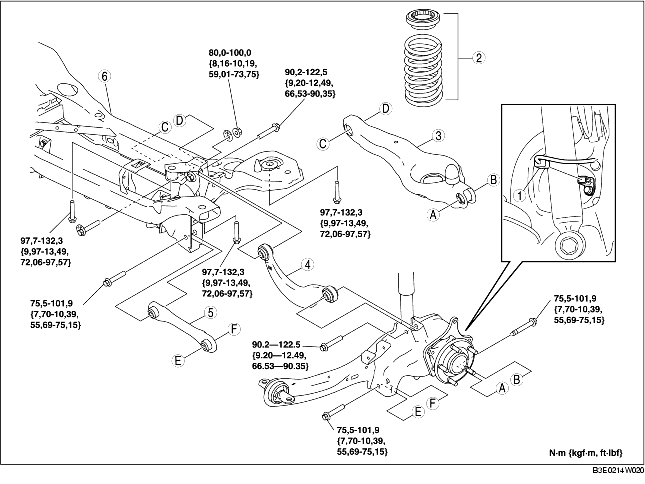

1. Déposer le capteur arrière de réglage automatique des phares.
(voir la section DÉPOSE/REPOSE DE CAPTEUR DE RÉGLAGE AUTOMATIQUE DE NIVEAU DE VÉHICULE.)
2. Déposer le stabilisateur arrière.
(voir la section DEPOSE/REPOSE DE STABILISATEUR ARRIERE.)
3. Déposer l'absorbeur de vapeurs de carburant.
(voir la section DEPOSE/REPOSE D'ABSORBEUR DE VAPEURS DE CARBURANT [ZJ, Z6, LF].)
4. Déposer les différents éléments selon l'ordre indiqué dans le tableau.
5. Pour la repose, suivre l'ordre inverse de la dépose.
6. Inspecter la géométrie des roues, et opérer les réglages nécessaires.
(voir la section GEOMETRIE DE ROUE ARRIERE.)

.
|
1
|
Connecteur de faisceau de câblage de capteur ABS de vitesse de roue
|
|
2
|
Ressort hélicoïdal arrière
(voir la section DEPOSE/REPOSE DE RESSORT HELICOIDAL ARRIERE.)
|
|
3
|
Bras inférieur arrière
(voir la section DEPOSE/REPOSE DE BRAS INFERIEUR ARRIERE.)
|
|
4
|
Bras supérieur arrière
(voir la section DEPOSE/REPOSE DE BRAS SUPERIEUR ARRIERE.)
|
|
5
|
Bras latéral arrière
(voir la section DEPOSE/REPOSE DE BRAS LATERAL ARRIERE.)
|
|
6
|
Barre transversale arrière
(voir la section Note sur la dépose de la barre transversale arrière.)
|
1. Soutenir la barre transversale arrière au moyen d'un cric, et déposer le boulon.
2. Déposer la barre transversale arrière.